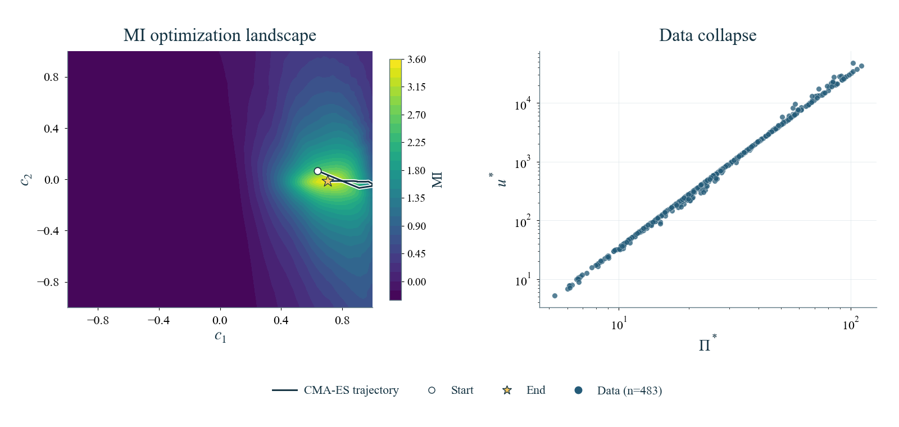

Magnetohydrodynamic power generator

Numerical results
| Scope | Samples | Groups | MI | ε | Test R² |
|---|---|---|---|---|---|
| Global | 483 | 1 | 3.394 | 0.034 | 0.999 |
Selected relations
Global
Input 1(h · rho0.33333 · dp_dx0.33333) / (mu0.66667)
Outputu*

| Scope | Samples | Groups | MI | ε | Test R² |
|---|---|---|---|---|---|
| Global | 483 | 1 | 3.394 | 0.034 | 0.999 |